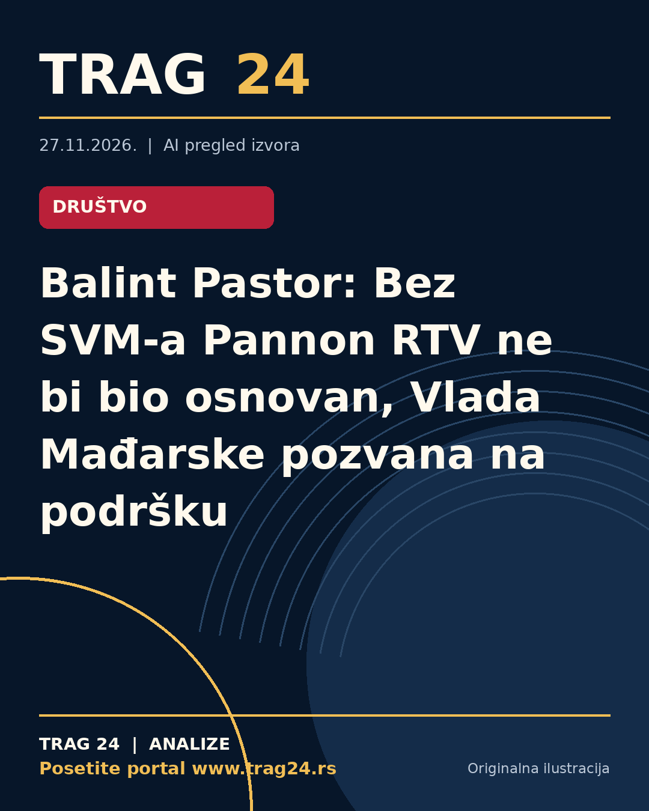

Balint Pastor: Bez SVM-a Pannon RTV ne bi bio osnovan, Vlada Mađarske pozvana na podršku

ŠTA SE DOGODILO
Kolektiv Pannon RTV-a saopštio je da je prethodnih godina jednostrano informisao javnost pod snažnim političkim uticajem, uključujući cenzuru i autocenzuru. Medijska kuća je izdala izvinjenje zbog takvog rada, navodeći da politički uticaj prestaje, ali da je finansijska egzistencija ugrožena. Predsednik Saveza vojvođanskih Mađara (SVM) Balint Pastor reagovao je na ovu izjavu, istakavši da Pannon RTV ne bi bio osnovan niti opstao bez podrške SVM-a i pozvao Vladu Mađarske da nastavi finansijsku pomoć ovom mediju.
HRONOLOGIJA
Pannon RTV je 25. novembra u Budimpešti imao sastanak sa predstavnicima vlasti, dok je iste večeri medij objavio saopštenje o višegodišnjem političkom uticaju na uređivačku politiku. U nastavku, Pastor je na Fejsbuku pozvao Vladu Mađarske da nastavi podršku Pannon RTV-u, podsećajući i na kontinuiranu podršku prethodnih mađarskih vlada. Istog dana mađarski premijer Peter Mađar komentarisao je situaciju, tražeći odgovore o političkom uticaju i načinu finansiranja medija.
ŠTA NAVODE IZVORI
Pastor je naveo da su kroz godine on i drugi ključni članovi SVM-a činili sve kako bi Vlada Mađarske finansirala rad Pannon RTV-a, te da Pannon RTV ima značaj za izveštavanje mađarske zajednice u Vojvodini, posebno u manjim mestima. Pastor je takođe kazao da je često bio nezadovoljan uređivačkom politikom, ali da nije javno komentarisao. Premijer Peter Mađar upozorio je na potrebu transparentnosti s obzirom na potrošeni javni novac iz Mađarske. Pannon RTV je potvrdio da može poslovati do 15. decembra, ukoliko ne dobiju dalje finansiranje, i najavio slobodno i profesionalno izveštavanje do tada.
ŠTA JE POTVRĐENO
Iz saopštenja Pannon RTV-a potvrđeno je da je medijski sadržaj bio pod snažnim političkim uticajem i da su postojale praksa cenzure i autocenzure. Takođe, potvrđeno je da je medij zavisan od finansijske pomoći Vlade Mađarske. Pastor je javno priznao da je SVM ključan faktor u osnivanju i opstanku ove medijske kuće. Mađarski premijer je otvoreno postavio pitanje o prirodi i izvoru političkog uticaja na RTV. Delegacija Pannon RTV-a je boravila u Budimpešti na razgovorima sa mađarskim vlastima.
ŠTA NIJE POTVRĐENO
Nije precizirano ko je konkretno vršio politički uticaj i cenzuru na Pannon RTV, niti su objavljeni detalji sadržaja takvog uticaja. Pastor nije otkrio detalje sa sastanka u Budimpešti, navodeći da ih neće iznositi u javnost. Nema potvrde o daljoj sudbini medija nakon 15. decembra ili o planovima za dalju uređivačku politiku.
ŠTA OSTАJE OTVORENO: Ostaje nepoznato koje će mere preduzeti Vlada Mađarske povodom apela za finansijsku podršku Pannon RTV-u, kao i da li će biti pokrenute istrage ili dublje analize navoda o političkom uticaju i cenzuri. Takođe nije poznato kako će Pannon RTV organizovati rad u uslovima finansijske nesigurnosti i kakav će biti dugoročni položaj medija unutar mađarske zajednice u Vojvodini.
Izvori
- https://insajder.net/prenosimo/pastor-bez-svm-a-panon-rtv-ne-bi-bio-osnovan-pozvao-vladu-madarske-da-podrzi-tu-televiziju
- https://nova.rs/vesti/drustvo/pastor-bez-svm-a-panon-rtv-ne-bi-bio-osnovan-pozvao-vladu-madjarske-da-podrzi-tu-televiziju/
- https://n1info.rs/vesti/bez-svm-a-panon-rtv-ne-bi-bio-osnovan-pastor-pozvao-vladu-madjarske-da-podrzi-tu-televiziju/
Ova analiza je pripremljena uz pomoć veštačke inteligencije na osnovu javno dostupnih izvora. Navodi izvora nisu nužno nezavisno potvrđeni.